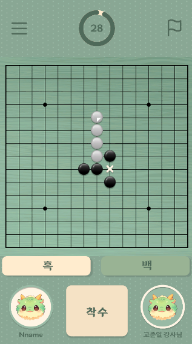

2D 오목
Android용 온라인 오목 게임입니다. 멋쟁이사자처럼 Unity 부트캠프 팀 프로젝트로, 대전 AI 구현 및 렌주룰 금수 판정을 보완했습니다.
프로젝트 개요
| 장르 | 2D 보드게임 (오목, 렌주룰) |
|---|---|
| 플랫폼 | Android |
| 기간 | 2025.03 (3주) |
| 팀 구성 | 7인 (개발 7) |
| 소속 | 멋쟁이사자처럼 Unity 부트캠프 |
| 사용 기술 | Client: Unity (C#) · Server: Node.js, JavaScript, MongoDB · 협업: Git |
담당 범위
| 기능 | 담당 | 확인 위치 |
|---|---|---|
| AI 알고리즘 개발, 응답 시간 최적화 | 전담 (100%) | 사례 1, 2MiniMaxAIController.cs |
| 렌주룰 (3-3, 4-4 금수) | 공동 (약 50%) · 팀원이 만든 판정을 보완, 3-3·4-4 판정을 주로 수정 | 사례 3DoubleThreeCheck.cs |
| 코드 리뷰와 통합 | 공동 (약 25%) · 통합 전 코드 리뷰로 충돌을 미리 해결, 팀 내 코드 리뷰 최다 참여 | — |
1. 대전 AI: 미니맥스 + 알파-베타 가지치기
AI는 차례마다 아래 순서로 다음 수를 고릅니다. 이길 수 있거나 막아야 하는 자리는 탐색 없이 바로 두고, 나머지 경우에만 4수 앞까지 탐색합니다.
- 즉시 승리 · 두면 바로 5목이 되는 자리가 있으면 그곳에 둠
- 즉시 방어 · 상대가 다음 수에 5목이 되는 자리가 있으면 막음
- 후보 추리기 · 주변에 돌이 있는 빈칸만 한 수 평가 후 점수순 정렬
- 탐색 · 미니맥스로 4수 앞까지 탐색, 알파-베타로 불필요한 가지 제거
- 급수 반영 · 설정한 급수에 따라 일정 확률로 차선의 수를 둠
// 미니맥스 + 알파-베타 (승패 판정 부분 생략)
private static float DoMinimax(PlayerType[,] board, int depth, bool isMaximizing,
float alpha, float beta, int recentRow, int recentCol)
{
if (depth == 0) return AIEvaluator.EvaluateBoard(board, _AIPlayerType);
float best = isMaximizing ? float.MinValue : float.MaxValue;
foreach (var (row, col, _) in GetValidMoves(board)) // 점수순으로 정렬된 후보
{
board[row, col] = isMaximizing ? PlayerType.PlayerB : PlayerType.PlayerA; // 임시로 둠
float score = DoMinimax(board, depth - 1, !isMaximizing, alpha, beta, row, col);
board[row, col] = PlayerType.None; // 되돌림
if (isMaximizing) { best = Math.Max(best, score); alpha = Math.Max(alpha, best); }
else { best = Math.Min(best, score); beta = Math.Min(beta, best); }
if (beta <= alpha) break; // 결과에 영향이 없는 가지는 더 보지 않음
}
return best;
}판의 평가 기준: 탐색이 끝난 판은 돌이 이어진 개수와 양 끝이 열려 있는지로 점수를 매깁니다. AI의 패턴은 더하고 상대의 패턴은 뺍니다.
| 패턴 | 점수 | 비고 |
|---|---|---|
| 5목 | 100,000 | 승리 |
| 열린 4 / 한쪽 열린 4 | 15,000 / 6,000 | 한 칸 띈 패턴(●●□●●)은 90%로 계산 |
| 열린 3 / 한쪽 열린 3 | 3,500 / 500 | |
| 4-4 · 4-3 · 3-3 | 12,000 · 11,000 · 9,000 | 한 돌에서 두 방향으로 동시에 생긴 경우 추가 점수 |
| 위치 보정 | 중앙 1.3배 → 가장자리 0.85배 | 중앙에 가까울수록 높게 |
- 공격과 방어를 함께 평가: 후보 칸마다 AI 돌을 놓았을 때(공격)와 상대 돌을 놓았을 때(방어)를 모두 계산합니다. 상대의 열린 3을 막는 수는 같은 공격 수보다 약 2배 높게 평가해, 위험한 수를 먼저 막도록 했습니다.
- 급수별 난이도: 18급은 실수 확률 35%, 1급은 1%로 시작합니다. 초반 5수는 실수를 절반으로 줄이고, 좋은 수를 4번 이상 연속으로 두면 조금씩 실수가 늘며, 종반에는 다시 줄어들어 사람과 비슷하게 두도록 했습니다. 급수가 낮을수록 더 나쁜 수를 고릅니다.
2. AI 응답 시간 줄이기
- PROBLEM
AI가 한 수를 두는 데 오래 걸려 대전 흐름이 끊겼습니다.
- CAUSE
미니맥스는 한 수 깊어질 때마다 둘 수 있는 칸을 모두 다시 탐색해, 깊이 4에서는 경우의 수가 크게 늘어납니다.
- SOLUTION
-
① 알파-베타 가지치기: 이미 더 좋은 선택지가 있어 결과에 영향을 주지 않는 가지는 탐색을 중단합니다.
② 후보 수 줄이기와 정렬: 주변 8칸에 돌이 있는 빈칸만 후보로 삼고, 한 수 평가 점수가 높은 순으로 정렬해 상위 8개만 깊게 탐색합니다. 좋은 수를 먼저 보면 알파-베타로 잘리는 가지가 많아집니다. 후보가 많을 때는 중간 점수의 수 2개를 함께 넣어, 점수표만 따르는 단조로운 수를 피했습니다.
③ 계산 결과 캐싱: 같은 칸·같은 방향의 돌 개수 계산을 저장해 다시 쓰고, 돌을 둔 자리 반경 4칸의 결과만 지워 다시 계산합니다.
④ 별도 스레드에서 탐색: Task.Run으로 탐색을 메인 스레드와 분리해, AI가 생각하는 동안에도 화면이 멈추지 않습니다.
allMoves.Sort((a, b) => b.Item3.CompareTo(a.Item3)); // 한 수 평가 점수가 높은 순
validMoves.AddRange(allMoves.Take(8)); // 상위 8개만 깊게 탐색
(int row, int col)? bestMove =
await Task.Run(() => MiniMaxAIController.GetBestMove(board)); // 메인 스레드와 분리3. 렌주룰 3-3·4-4 금수 판정 보완
렌주룰은 먼저 두는 흑이 유리한 오목의 균형을 맞추기 위해, 흑에게만 3-3, 4-4, 장목(6목 이상)을 금지하는 규칙입니다. 팀원이 만든 판정에서 3-3·4-4처럼 두 줄이 겹치는 패턴의 판정을 주로 보완했습니다.
- 판정 시점: 흑 차례가 돌아올 때마다 금수 여부를 검사합니다.
- 판정 방법: 검사할 칸에 흑을 임시로 놓고, 4방향마다 앞뒤 5칸씩 총 11칸을 한 줄로 뽑아 패턴을 확인한 뒤 원래대로 되돌립니다. 판 밖은 백돌처럼 막힌 칸으로 처리합니다.
- 3-3: 붙은 3(●●●)과 한 칸 띈 3(●●□●)을 모두 보되, 양 끝이 열려 있고 5목까지 이어질 수 있는 3만 열린 3으로 셉니다. 열린 3이 2방향 이상이면 금수입니다.
- 4-4: 5목을 만들 수 있는 4가 2방향 이상이면 금수입니다. 여기에 더해, 한 줄 안에서 4가 두 번 생기는 패턴은 방향 개수로는 1개로 세어져 놓치게 되므로 따로 검사합니다.
public bool IsDoubleFour(PlayerType[,] board, int row, int col)
{
return FindDoubleLineFour(board, row, col) // 서로 다른 두 방향에서 4
|| FindSingleLineDoubleFour(board, row, col); // 한 줄 안에서 4가 두 번
}
// 한 줄 쌍사: 방향 개수로는 잡히지 않아 줄 모양으로 직접 확인
if (patternStr.Contains("●●□●●□●●") || patternStr.Contains("●□●●●□●"))
return true;회고
- 승패 점수와 평가 점수의 크기 차이: 미니맥스 탐색 중 승리는 100, 패배는 -100으로 반환하도록 했는데, 판 평가 점수는 열린 3 하나만 있어도 3,500이었습니다. 그래서 탐색 중에 실제로 이긴 판이 아직 승부가 나지 않은 판보다 낮게 평가될 수 있었습니다. 탐색 전에 즉시 승리와 방어를 먼저 처리해 영향이 줄어들긴 했지만, 승패 점수는 평가 점수가 낼 수 있는 최댓값보다 크게 잡아야 했습니다.